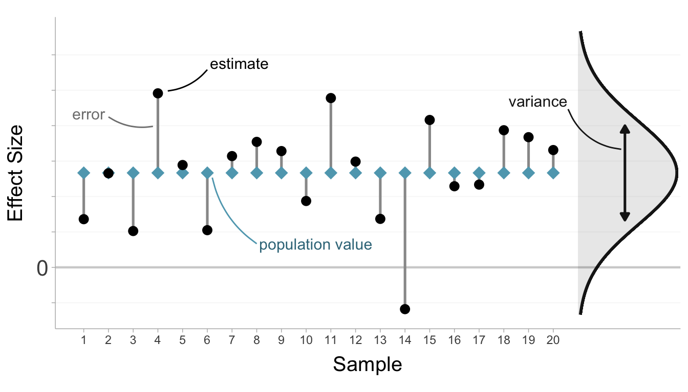
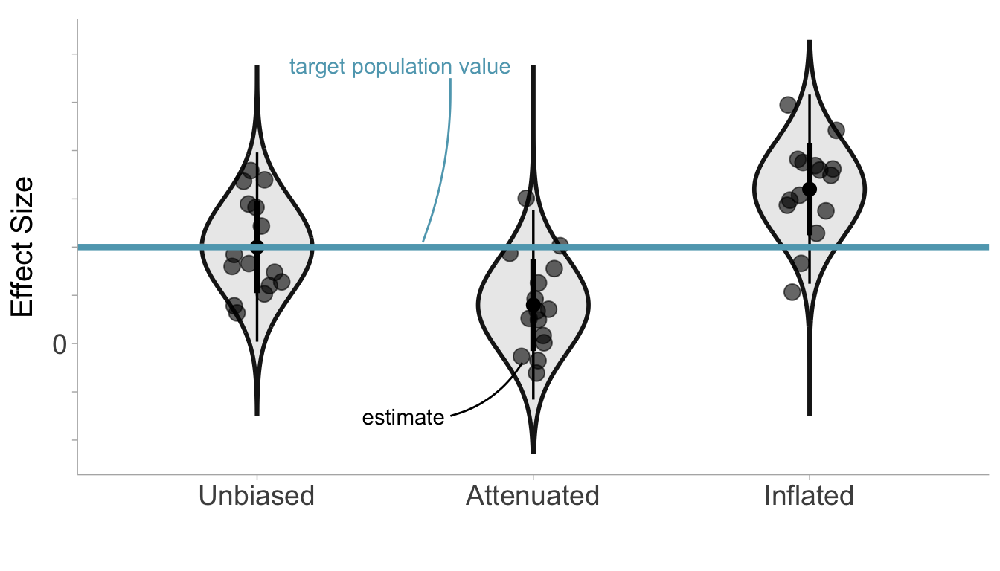
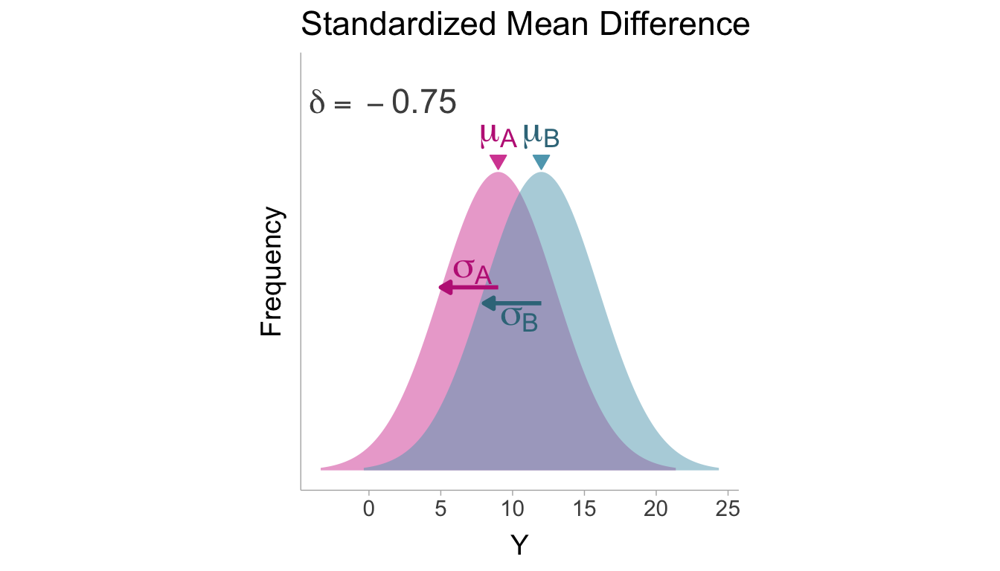

3 Effect Sizes and Artifacts
3.1 What are Effect Sizes?
Effect sizes are statistics that measure the magnitude of a relationship between variables. It’s important to remember that effect sizes are a valuable tool, enabling researchers to extract meaningful insights from data, rather than being the ultimate objective themselves. Effect sizes aide in researcher’s ability to draw meaningful inferences from data and therefore it is crucial that they are accurate. Correlation coefficients and standardized mean differences are two of the most common effect sizes and so they will be the primary focus of this book.
3.2 Defining the Scientific Estimand
It is important to clearly define the quantity that we aim to estimate (i.e., the estimand). A clearly defined estimand not only shapes our statistical analyses but also establishes a meaningful connection between empirical observations and a theoretical quantity (Lundberg, Johnson, and Stewart 2021). A study can produce effect size estimates that do not accurately reflect the target value. Inaccuracies in effect size estimates can be due to deviations between the current study’s design and the design of a technically perfect study (Rubin 1992). Obtaining a quality estimate of the target effect size requires that the study sample and the measured variables accurately reflect the population and variables of interest. We can illustrate this with the following example:
Let’s say we want to know the correlation between student motivation and stress among high-school students. Suppose we conduct a study to estimate the correlation by administering a survey to a sample of senior students at a private high school. The survey consists of two questions asking student’s to rate their level of motivation and stress on a scale of 1-10. Let’s now compare how the target population and variables differ from the study population and variables (see Table 3.1):
| Target | Study | Potential sources of contamination | |
|---|---|---|---|
| POPULATION | High-School Students | Seniors High-School students | Range Restriction. Senior student’s at private universities may have a more narrow range of characteristics such as stress and motivation than other classes (e.g., freshmen) and schools (e.g., public). |
| VARIABLES | Motivation and Stress | Self-report questionnaire | Measurement Error. The measurement of the target variables of motivation and stress likely will produce errors that do not reflect the true motivation and stress of each individual. |
3.3 Effect Size Errors
3.3.1 Random (Sampling) Errors
Let’s start by differentiating between a population effect size and a sample estimate. The population effect size, characterizes the effect size among all possible observations of interest. In contrast, a sample effect size is an estimate of this population value, estimated by a random sample of observations. Throughout the book, population effect sizes will be denoted with Greek letters whereas sample estimates will be denoted with an English letters.
The population effect size is a constant, unchanging value that remains fixed across samples. However, if we were to take a random sample from the population and estimate an effect size we would find that the sample estimate varies from sample to sample and does not exactly reflect the population value. This is due to the fact that randomly taking a subset of the population will contain inherent variability in the composition of the sample. Sampling errors describe the random deviations that we observe in effect size estimates from sample to sample (Barraza et al. 2019). Sampling errors are random, however we will see in the next section that not all errors are systematic. We can quantify sampling errors by the variance of the effect size estimator. The variance of an effect size estimator tends to be some function of sample size, where large samples will show less variance compared to small samples. For an illustration of sampling error, see Figure 3.1.
3.3.2 Systematic Errors
Sampling errors produce random errors in effect sizes, however, we can also observe systematic errors. Systematic errors are deviations from the target population value that are consistent across samples and produce bias in effect size estimates. In other words, effect size estimates will be on average larger or smaller than the target population value (Barraza et al. 2019). Random sampling errors, on the other hand, will be larger or smaller than the target population value only by chance. Attenuation describes a type of systematic error where the effect size estimates are smaller than the target population value on average. Inflation on the other hand, is a type of bias that produce effect size estimates that are larger on average. An unbiased effect size would be one where there is no systematic errors and therefore, on average, it is equal to the population effect size. As we will see in future chapters, study artifacts such as selection effects and measurement error can produce effect sizes that contain systematic errors.
We can see in Figure 3.2 that the sampling distribution does not become wider or smaller with systematic errors (this may occur indirectly if the sampling variance depends on the effect size itself), instead the whole sampling distribution shifts downward or upward depending on whether the effect size estimates are attenuated or inflated, respectively.

3.4 Modeling Observed Effect Sizes
We can think of an observed effect size estimate as having three components:
flowchart TD
E("observed effect <br>size estimate"):::estimates --- X("systematic <br>error (bias)"):::artifacts
E:::estimates --- Z("target population<br>effect size (estimand)"):::target
E:::estimates --- Y("random (sampling)<br>error"):::sampling
classDef artifacts fill:#d74ea250,stroke-width:0px
classDef sampling fill:#00000020,stroke-width:0px
classDef target fill:#5fa6bc55,stroke-width:0px
classDef estimates fill:#ffffff00,stroke-width:0px
linkStyle default stroke-width:2px,fill:none,stroke:black;
Let’s construct a statistical model for an observed effect size estimate \(h_i\) for a given sample, \(i\), that accounts for each of these three components. The target population effect size will be denoted by the Greek letter \(\theta\) which does not vary from sample to sample. The artifact attenuation/inflation factor is denoted with the Greek letter \(\alpha\) and accounts for the systematic error that is consistent across samples. Finally the sample error is denoted by the Greek letter \(\varepsilon\) which accounts for the random sampling error across samples (Raju et al. 1991, based on eq. 1),
\[ h_i = {\color{#cb427b}\alpha} {\color{#347e9f}\theta} + {\color{#797979ff}\varepsilon}_i. \tag{3.1}\]
Note that \({\color{#cb427b}\alpha}\) and \({\color{#347e9f}\theta}\) are fixed and does not vary across samples (no subscript \(i\)), wheras \({\color{#797979ff}\varepsilon}_i\) does vary from sample to sample. For the above equation to be true we need to assume that the expectation (i.e., the mean over repeated samples) of \({\color{#797979ff}\varepsilon}_i\) is zero such that, \(\mathbb{E}[{\color{#797979ff}\varepsilon}_i] = 0\). A consequence of this assumption is that the expectation of the observed effect size estimate is \(\mathbb{E}[h_i]={\color{#cb427b}\alpha} {\color{#347e9f}\theta}\). We will label the term \({\color{#cb427b}\alpha} {\color{#347e9f}\theta}\) as the contaminated population effect size as it is a fixed value that encompasses the target effect size and systematic error.
The artifact attenuation/inflation factor, \({\color{#cb427b}\alpha}\), completely describes the net systematic error in the observed effect size estimates. The value of \(\alpha\) can indicate whether \(h_i\) is an unbiased (\({\color{#cb427b}\alpha} = 0\)), attenuated (\({\color{#cb427b}\alpha} < 1\)), or inflated estimator (\({\color{#cb427b}\alpha} > 1\)).
Because of random sampling error, the observed effect size estimate will differ from sample to sample (\(h_1\neq\) \(h_2\neq\) \(h_3\neq...\)). The extent to which estimates fluctuate across samples can be quantified by the variance of the effect size estimator, denoted as \(\text{var}(h_i)\). Remember that the contaminated population effect size (\({\color{#cb427b}\alpha} {\color{#347e9f}\theta}\)) fixed across samples, this would result in variation in random sampling errors to be solely responsible for the variation in observed effect sizes such that, \(\text{var}(h_i)=\text{var}({\color{#797979ff}\varepsilon}_i)\).
3.5 Correcting Effect Sizes
In principle, if we know the value of the artifact attenuation/inflation factor \({\color{#cb427b}\alpha}\) then we could correct the observed effect size for systematic errors. However, \({\color{#cb427b}\alpha}\) is unknown and must be estimated. An estimate of \({\color{#cb427b}\alpha}\) will be denoted by the English letter \({\color{#cb427b}a}\). According to the model described in Equation 3.1, \({\color{#cb427b}\alpha}\) is a fixed value that does not vary from sample to sample, however it’s sample estimate will:
\[ {\color{#cb427b}a}_i = {\color{#cb427b}\alpha} + {\color{#797979ff}\xi}_i, \tag{3.2}\]
where \({\color{#797979ff}\xi}_i\) denotes the sampling error in \({\color{#cb427b}a}_i\). The corrected effect size can thus be calculated by dividing the observed effect size by the estimated artifact factor,
\[ {\color{#347e9f}h_c}_{_i} = \frac{h_i}{{\color{#cb427b}a}_i}, \tag{3.3}\]
The corrected effect size will only be an asymptotically (as the sample size approaches infinity) unbiased estimator of the target population value. As we will see in future chapters, corrections will also impose additional distributional assumptions on the data.
Sampling variance of the corrected effect size will depend greatly on the estimation procedure of the effect size and the artifact factor. Sampling variance for corrected effect sizes will be discussed in more detail for each artifact correction chapter.
3.6 Effect Size Types
Although there are many types of effect sizes we can use to quantify research findings, we will primarily focus on two: correlations and standardized mean differences (SMD).
3.6.1 Correlations
A correlation describes the relationship between two continuous variables. The population correlation (\(\rho\)) between variables, \(X\) and \(Y\), can be defined as the covariance (\(\sigma_{XY}\)) divided by the product of the standard deviations of \(X\) (\(\sigma_{X}\)) and \(Y\) (\(\sigma_{Y}\)) (Cooper, Hedges, and Valentine 2009, equation 11.21; Jacobs and Viechtbauer 2017, eq. 1),
\[ \rho = \frac{\sigma_{XY}}{\sigma_{X}\sigma_{Y}}. \tag{3.4}\]
A sample estimate of the population correlation can be defined as the sample covariance (\(S_{XY}\)) divided by the product of the sample standard deviations (Jacobs and Viechtbauer 2017, eq. 2),
\[ r = \frac{S_{XY}}{S_XS_Y} \tag{3.5}\]
This is commonly referred to as the Pearson correlation coefficient. The Pearson correlation coefficient was first introduced by Auguste Bravais (1844), then later developed further by Karl Pearson, lending itself to the name. See Figure 3.3 for a visualization of correlated variables.

Assuming that the variables follow a bivariate normal distribution, the asymptotic variance in an observed correlation with \(n\) observations is (Pearson and Filon 1898, 174; Jacobs and Viechtbauer 2017, eq. 9),
\[ \text{var}(r_i) \overset{_\infty}{=} \frac{\left(1 - \rho^2\right)^2}{n}, \tag{3.6}\]
Since the population correlation is unavailable in practice, an accurate estimate of the variance for a given sample \(i\) uses the sample correlation instead of population correlation and uses the degrees of freedom, \(n-1\), in the denominator instead of the sample size (Cooper, Hedges, and Valentine 2009, eq. 12.27; Jacobs and Viechtbauer 2017, eq. 10),
\[ \widehat{\text{var}}(r_i) = \frac{\left(1 - r_i^2\right)^2}{n-1} \tag{3.7}\]
Within the context of a research study that is contaminated with artifacts, we can model an observed correlation for a sample \(i\) as similarly to an Equation 3.1,
\[ r_i = {\color{#cb427b}\alpha} {\color{#347e9f}\rho} + {\color{#797979ff}\varepsilon}_i. \tag{3.8}\]
Where \({\color{#347e9f}\rho}\) is the target population correlation (the estimand), \({\color{#cb427b}\alpha}\) is the artifact attenuation/inflation factor, and \({\color{#797979ff}\varepsilon}_i\) denotes the sampling errors. The observed correlation is biased relative to the target population correlation as a function of \({\color{#cb427b}\alpha}\), and therefore a corrected correlation can calculated by,
\[ {\color{#347e9f}r_c}_{_i} = \frac{r_i}{{\color{#cb427b}a}_i}. \tag{3.9}\]
For example, we will see in Chapter 7 that if \(X\) and \(Y\) are bivariate normal and \(X\) undergoes dichotomization through a median split (i.e., dividing observations into two groups based on the median of \(X\)) the observed correlation will be attenuated. In this scenario, the artifact attenuation/inflation factor is \({\color{#cb427b}a} = 2/\sqrt{2\pi} \approx .80\), and therefore if the observed correlation is \(r = .40\) then the corrected correlation would be estimated as \(r_c=r/{\color{#cb427b}a}=.40/.80=.50\).
3.6.2 Standardized Mean Difference
The standardized mean differences (SMD) is used to quantify the difference between the average value between two groups. In the population, the SMD (\(\delta\)), the difference between the mean of group \(A\) (\(\mu_A\)) and group \(B\) (\(\mu_B\)) is standardized by the population within group standard deviation (\(\sigma\)) (Cohen 1988, eq. 2.2.1),
\[ \delta = \frac{\mu_A - \mu_B}{\sigma}. \tag{3.10}\]
Dividing by the population within-group standard deviation assumes that the standard deviations within both groups are fixed and equal (i.e., \(\sigma=\sigma_A=\sigma_B\)). For a visualization of an SMD see Figure 3.4.

Cohen (1988) developed a sample estimator of \(\delta\) that is commonly referred to as Cohen’s \(d\). Within a sample, we can estimate \(\delta\) with the sample estimator (Cooper, Hedges, and Valentine 2009, eq. 11.96),
\[ d = \frac{\overline{Y}_A-\overline{Y}_B}{S_p}, \tag{3.11}\]
where \(S_p\) is the pooled sample standard deviation and the bars indicate the sample mean. The pooled standard deviation computes a weighted average (weighted by the within-group degrees of freedom, e.g., \(n_{A}-1\)) of the within-group sample variance and then takes the square root (Cooper, Hedges, and Valentine 2009, eq. 12.12),
\[ S_p = \sqrt{\frac{(n_A-1)S_A^2 + (n_B-1)S_B^2}{n-2}} \tag{3.12}\]
Where \(n_A\), \(n_B\), and \(n\) represent the sample size within group \(A\), group \(B\), and the total sample size (\(n = n_A+n_B\)), respectively. Assuming that \(Y\) is normally distributed within each group and the within-group variances are equal, the asymptotic sampling variance of an SMD is (Hedges and Olkin 1985, eq. 14),
\[ \text{var}(d_i) \overset{_\infty}{=} \frac{n}{n_An_B} + \frac{\delta^2}{2n}. \tag{3.13}\]
Since the population SMD is unknown, we can estimate it with the sample \(d\) value. Therefore the estimated variance can be computed as (Hunter and Schmidt 2015, eq. 7.23),
\[ \widehat{\text{var}}(d_i) = \left(\frac{n - 1}{n - 3}\right)\left(\frac{n}{n_An_B} + \frac{\delta^2}{2n}\right). \tag{3.14}\]
Note that the multiplier, \((n_A+n_B - 1)/(n_A+n_B - 3)\), is to account for slight underestimation of the sampling variance in small sample sizes (Goulet-Pelletier and Cousineau 2018).
In a study contaminated by artifacts, we can model an observed SMD for a sample \(i\) as similarly to an Equation 3.1,
\[ d_i = {\color{#cb427b}\alpha} {\color{#347e9f}\delta} + {\color{#797979ff}\varepsilon}_i. \tag{3.15}\]
Where \({\color{#347e9f}\delta}\) is the target population SMD (the estimand), \({\color{#cb427b}\alpha}\) is the artifact attenuation/inflation factor, and \({\color{#797979ff}\varepsilon}_i\) denotes the sampling errors. The observed SMD is biased relative to the target population SMD as a function of \({\color{#cb427b}\alpha}\). However, \({\color{#cb427b}\alpha}\) is not available in practice and so therefore the observed SMD can be corrected by dividing by an estimate of \({\color{#cb427b}\alpha}\),
\[ {\color{#347e9f}d_c}_{_i} = \frac{d_i}{{\color{#cb427b}a}_i}. \tag{3.16}\]
Occasionally, corrections can not be applied to the contaminated \(d\) value directly. In such cases, we may have to correct \(d\) by first converting to a point-biserial correlation (i.e., a Pearson correlation between a dichotomous group variable and continuous variable), correcting the correlation, and then converting back to a (corrected) \(d\) value (Hunter and Schmidt 2015). The three-step procedure can be applied as follows:
- Convert \(d\) to \(r\) using the proportion of subjects in group \(A\) or group \(B\) (\(p=n_A/n\) or \(p=n_B/n\)) (Wiernik and Dahlke 2020, equation 9),
\[ r_i = \frac{d_i}{\sqrt{\frac{1}{p_i(1-p_i)}+d_i}}. \tag{3.17}\]
- Correct the point-biserial correlation,
\[ {\color{#347e9f}r_c}_{_i} = \frac{r_i}{{\color{#cb427b}a}_i}. \]
- Convert \(r_c\) back to a \(d\) value. If the proportions of group membership are contaminated by artifacts, then we need the true group proportions in the target population (\(p_i^*\)) to convert back to \(d\). If the the true group proportions are unavailable, then we can use the observed proportions as estimates (Wiernik and Dahlke 2020, equation 10)
\[ {\color{#347e9f}d_c}_{_i} = \frac{{\color{#347e9f}r}_{{\color{#347e9f}c}_i}}{\sqrt{p_i^*(1-p_i^*)(1-{\color{#347e9f}r}_{{\color{#347e9f}c}_i}^2)}} \approx \frac{{\color{#347e9f}r}_{{\color{#347e9f}c}_i}}{\sqrt{p_i(1-p_i)(1-{\color{#347e9f}r}_{{\color{#347e9f}c}_i}^2)}}. \tag{3.18}\]
The sampling variance of the corrected SMD can be quite complicated when there is sampling error in the artifact factor.